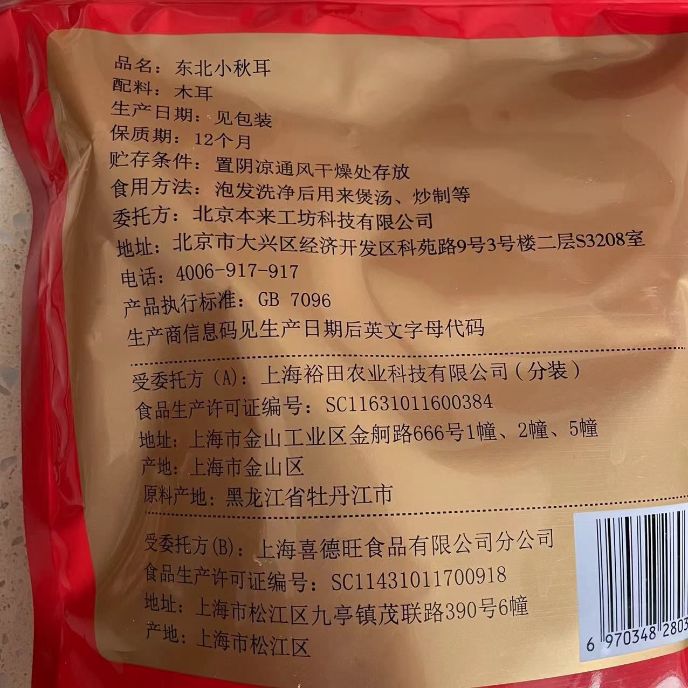
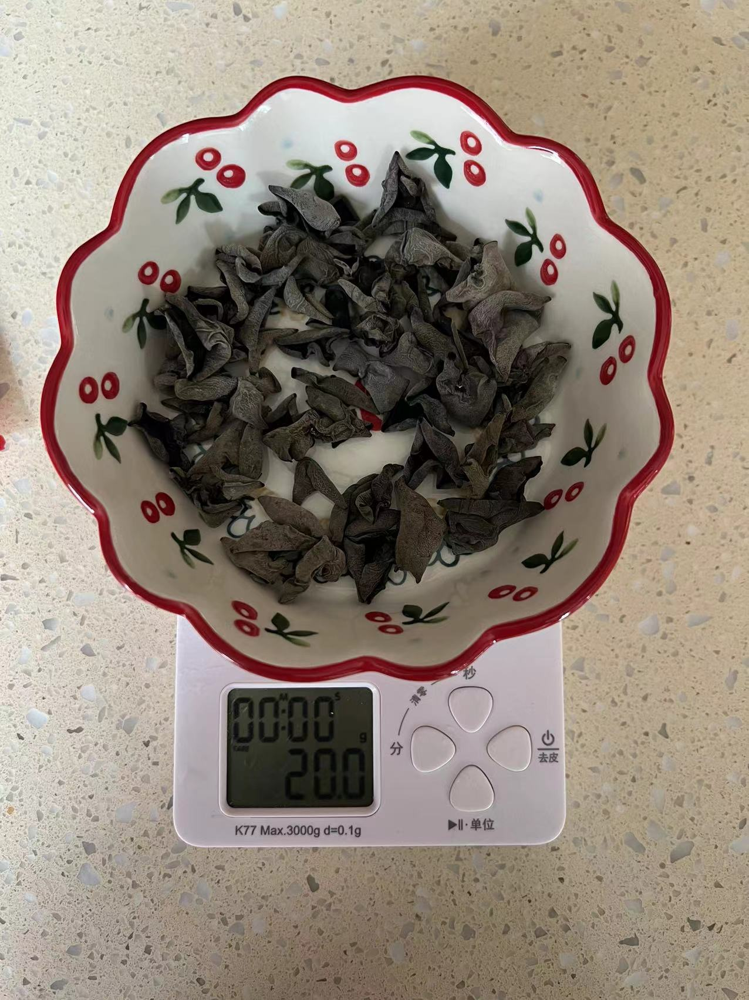
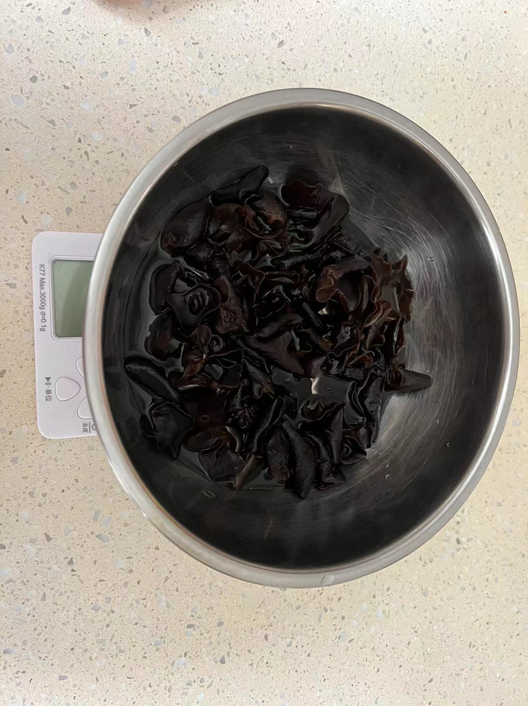
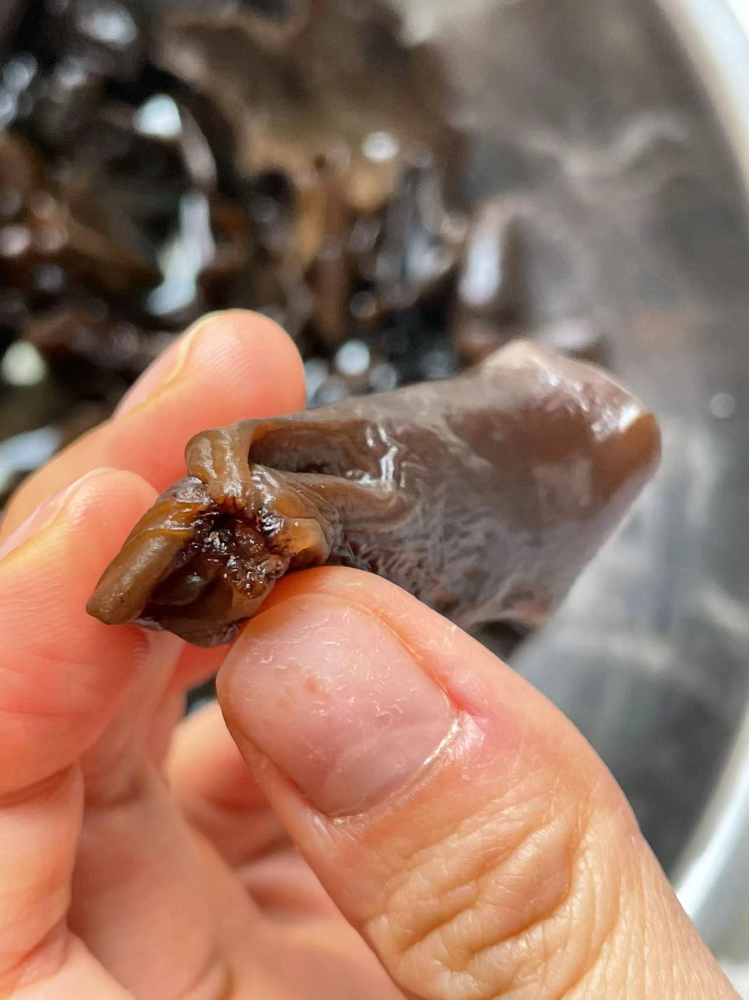
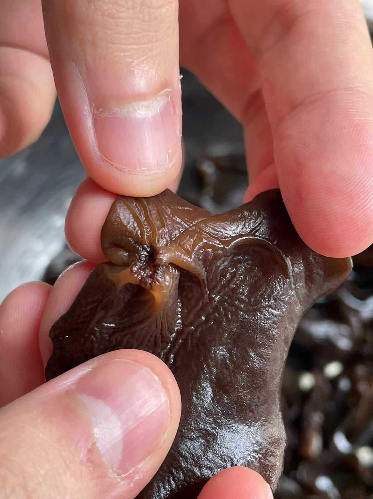
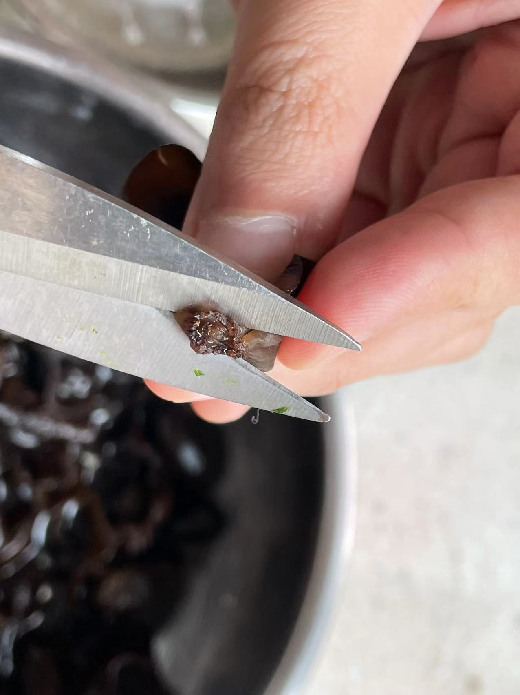
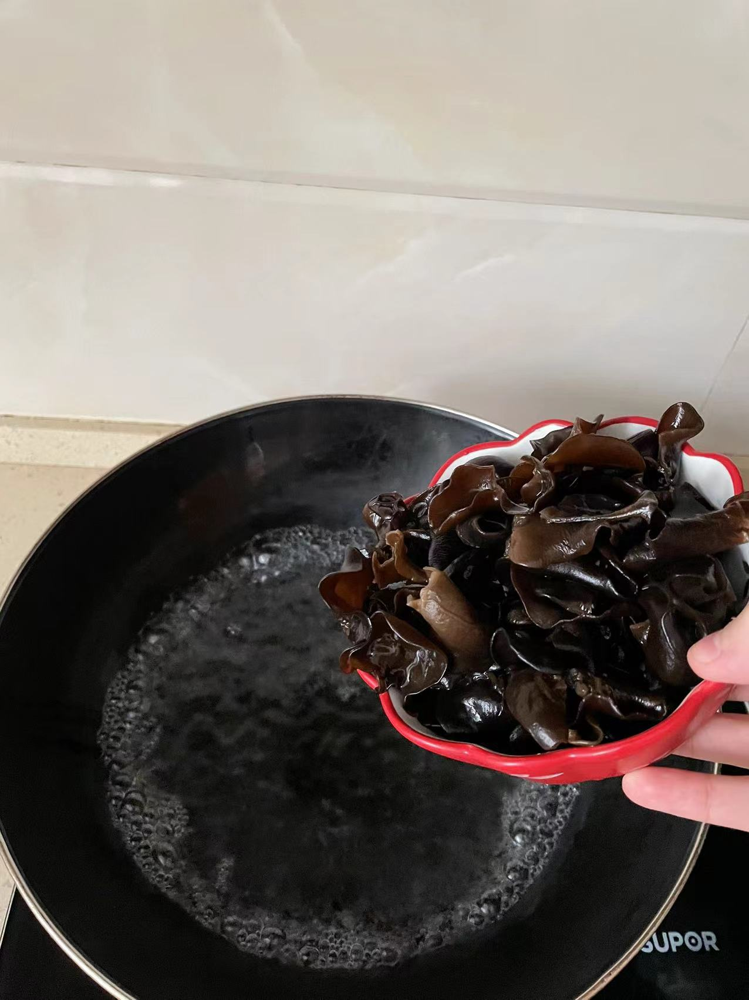
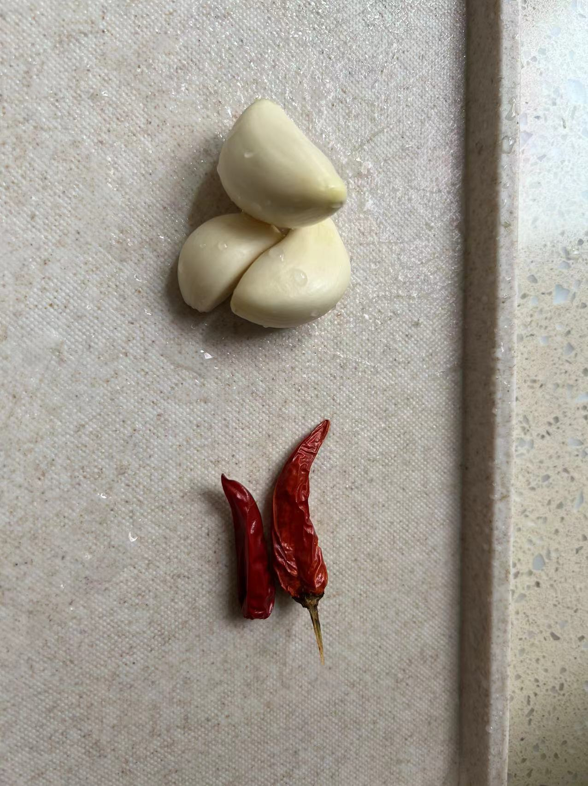
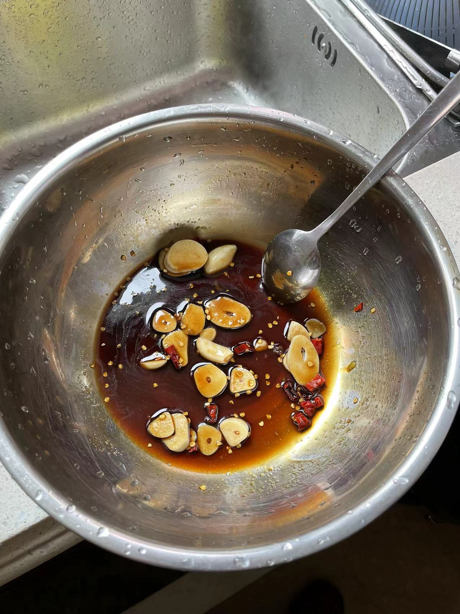
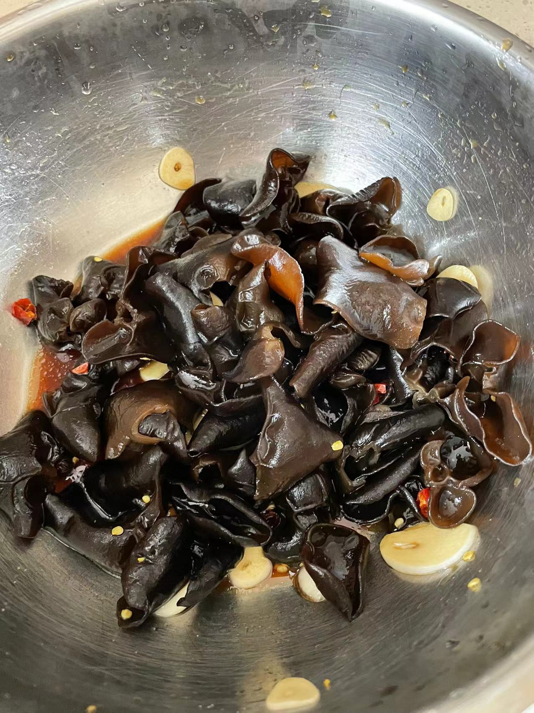

凉拌木耳的做法
凉拌木耳，由于发放物资中有很多干货，木耳是较为健康的食物。且凉拌木耳的烹饪方式也相对简单。
预估烹饪难度：★★
必备原料和工具
- 干木耳 （湿木耳也可，但不能太久之前泡发的，必须是新鲜的湿木耳）
- 蒜瓣
- 白糖
- 小米辣
- 盐
- 香油
- 生抽
- 醋
- 芥末 （可以不用）
计算
每份（1 人量）:
- 干木耳: 20g / 湿木耳: 120g
- 蒜瓣: 2-3 个
- 小米辣: 2 个
- 盐: 2 g
- 糖: 5-10g（依个人口味）
- 生抽: 15ml
- 醋: 15ml
- 香油: 5ml
- 芥末: （约 2cm）
操作
- 泡发干木耳, 水量约为 400ml, 泡发约 45 分钟。 （湿木耳跳过此步骤）
- 将泡发好的木耳, 进行去根处理（如图 4, 5, 6）, 并彻底洗净。
- 起锅烧水，水开后放入木耳, 大火煮 1.5-2 分钟。
- 将蒜瓣、小米辣切碎放入碗中 （可选取中大碗）, 并依次加入盐、糖、生抽、醋、香油、芥末, 用量如上。
- 木耳盛出后沥水, 放入上一步碗中。
- 搅拌充分，端盘。
         
附加内容
- 调味品的数量可以根据个人口味进行调整, 如果不喜欢芥末, 可以不加入。
- 等木耳冷却入味后口味更佳, 约 15 分钟。
如果您遵循本指南的制作流程而发现有问题或可以改进的流程，请提出 Issue 或 Pull request 。